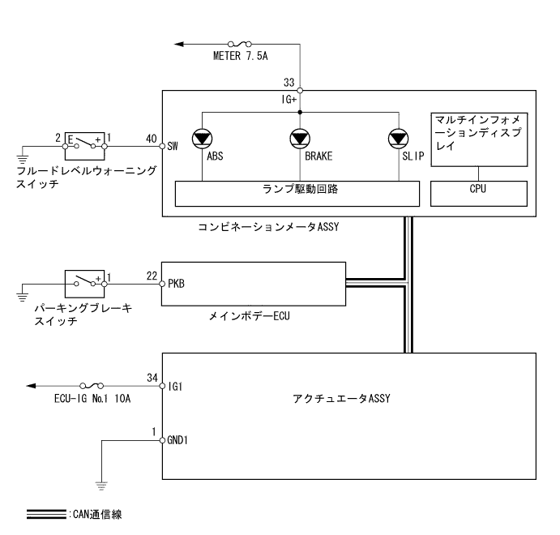
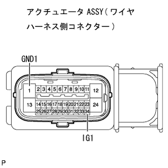

ABS with EBD & TRC & VSC & BA System ABS Warning Light Remains On |

)| Step 1 | Inspect Connection Condition of Each Part |
Lightly shake the actuator assembly connector and wire harness up and down and side to side, and inspect the ABS warning light illumination status.
|
| ||||
| OK | |
| Step 2 | Inspect Control System CAN Communication System |
Using the SST (TaSCAN), inspect the DTCs and check that there is no malfunction in the CAN communication system. (see)
|
| ||||
| OK | |
| Step 3 | Inspect ABS & Traction Actuator Assembly (IG1,GND1) |
 |
Turn the IG OFF and disconnect the brake actuator assembly connector.
Using the SST (Toyota electrical tester), measure the resistance and voltage between the wire harness side connector of the brake actuator assembly and body ground.
| Tester Connection | Condition | Standard |
|---|---|---|
| 1 (GND1) - Body ground | Always | Below 1 Ω |
| Tester Connection | Condition | Standard |
|---|---|---|
| 34 (IG1) - Body ground | IG ON | 10 to 14V |
|
| ||||
| OK | |
| Step 4 | Perform Active Test (ABS Light) |
Using the SST (TaSCAN), perform the Active Test of the ABS warning light. (see)
|
| ||||
| OK | ||
| ||